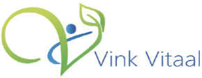
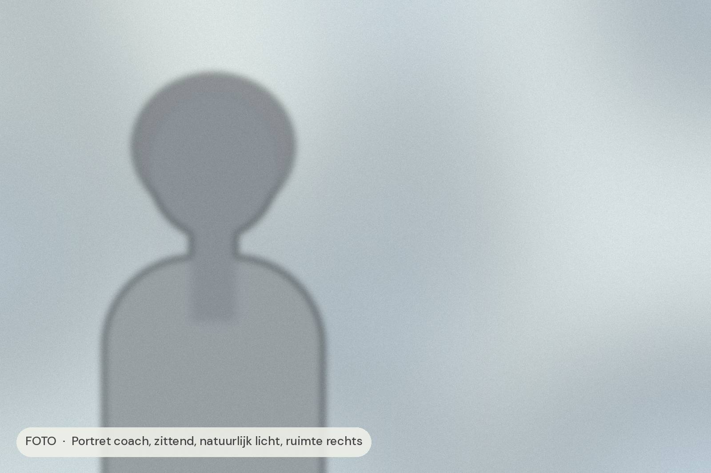
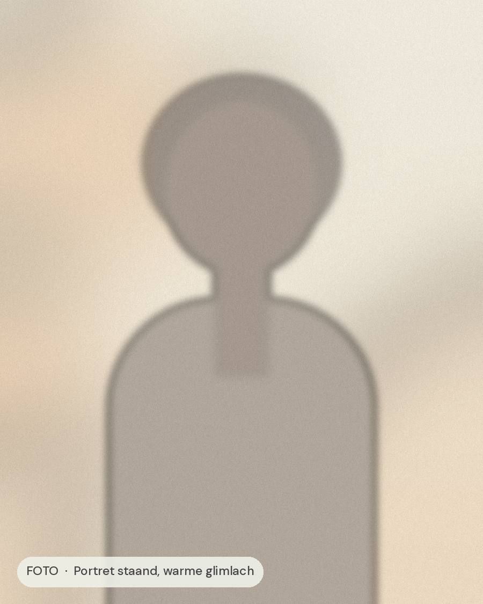
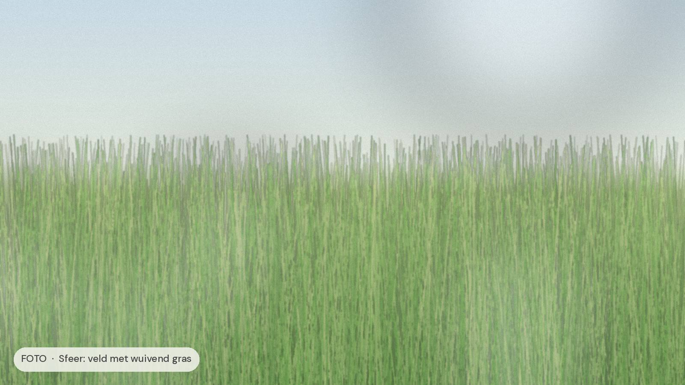

Vitaal Leiderschap
Vitaal leiden begint bij jezelf
Voor leidinggevenden en ondernemers die veel ballen hooghouden en merken dat hun energie opraakt. Samen bouwen we aan rust in je hoofd, ruimte in je agenda en plezier in je werk.
Ik help leidinggevenden om met energie en rust te leiden, zonder zichzelf te verliezen.


Je bent er niet om alleen maar te overleven tussen de vergaderingen door. Je wilt leidinggeven op een manier die klopt: met aandacht voor je mensen én voor jezelf.
Bij Vink Vitaal werken we aan wat jou energie geeft en wat je energie kost. We combineren praktische inzichten over vitaliteit met coaching op jouw rol als leider.
De kern: goed leiderschap hoeft niet zwaar te voelen. Je hoeft niet harder te werken, je hebt richting, rust en een aanpak nodig die bij jou past.

Start jouw traject
1-op-1
Persoonlijke coaching
Een traject helemaal rond jou. We brengen in kaart waar je energie heen lekt, maken keuzes die rust geven en zetten stappen die je direct merkt, op je werk en thuis.
Groepsprogramma
Vitaal Leiderschap
Een programma voor leidinggevenden die samen willen groeien. Met kennis over energie en herstel, intervisie met gelijkgestemden en tijd om te oefenen in de praktijk.
Ervaringen
Wat klanten ervaren
“Ik weet weer waar ik naartoe wil, en het voelt licht.”
Ik liep vast in een agenda vol verwachtingen. Nu kies ik bewuster en heb ik ’s avonds weer energie over.
— Naam klant, teamleider
“Ik ben gestopt met duwen. Alles kwam in beweging.”
Ik dacht dat harder werken de oplossing was. Ik leerde mijn grenzen voelen en mijn team meer vertrouwen.
— Naam klant, manager
“Ik leid weer vanuit rust in plaats van vanuit stress.”
Praktisch, warm en eerlijk. Ik merk het verschil in mijn gesprekken, mijn slaap en mijn plezier in het werk.
— Naam klant, directeur

Het traject
Van overleven naar vitaal leiden
In een traject bij Vink Vitaal ga je van rennen op reserve naar leidinggeven met energie, focus en vertrouwen.
- Je weet wat je energie geeft en wat het kost
- Je maakt keuzes die passen bij wie je bent
- Je team merkt het verschil in jouw rust
Kennismaken
Klaar voor meer rust en energie?
Plan een vrijblijvend gesprek. We kijken samen waar je nu staat en wat jou verder helpt.
Gratis · 30 minuten · online of in de praktijk